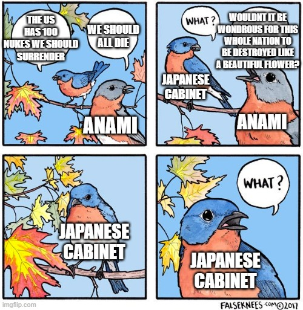

2024-07-30
Anami Korechika, and quotes born out of translation

A classic r/HistoryMemes post : oversimplified, sourcing Wikipedia, and of questionable veracity. In this case, the meme is referencing August 9th 1945, and Anami Korechika's words during the Imperial Conference that took place that night.
The topic of the conference was on how many conditions Japan should attach to their surrender to the Allies, and the Japanese cabinet was at a deadlock. Three members were for a surrender with one precondition, being the preservation of the Emperor as head of state. The other three were for a surrender with three additional preconditions; the sentencing of Japan's war criminals internally, the independent demilitarisation of the Japanese military, and a guarantee of no Allied occupation on the mainland. Precluding this, the three stated, Japan should reject any surrender and fight until its destruction.
Anami was in the latter camp. In this context, during the Imperial Conference, he protested against the adoption of the former camp's position. Among his words was the following:
“...But even if the enemy repeats his thrusts and we cannot repel him, would it not be wondrous for this whole nation to be destroyed like a beautiful flower, leaving for this world's posterity only the great name of Japan and its brave, noble history? Would it not be glorious to be remembered as a people who refused to submit? Would it not be far better than surrendering ignominiously to our enemies?"
His words here, especially, "...would it not be wondrous for this whole nation to be destroyed like a flower...?" have been popularised in the western discussion of this moment, being liked by thousands on platforms such as Reddit's r/HistoryMemes and r/NonCredibleDefense. It is also in the Wikipedia page for "Surrender of Japan".
There's only one issue: there isn't any mention of Anami mentioning this phrase in Japanese sources.
This phrase is attributed to a book called Imperial Tragedy , by Thomas M. Coffey. While Thomas M. Coffey is an author of multiple books on history, he is not a historian; rather, alongside serving in the Air Force in WWII, his main profession was as a journalist and a television producer. He also primarily relied on translated sources for his book.
As such, I was already quite doubtful of the quote, and I decided to look into the Japanese sources from the end of the war to try and corroborate it.
One of the definitive collection of Japanese sources around the end of the Pacific theatre of WWII is the Shusenshiroku (終戦史録) published by the Ministry of Foreign Affairs in 1952. A compilation of Japanese sources, it gives various perspectives on the WWII-era Japanese government, through a lens without the historical revisionism that has permeated parts of the Japanese government and politics afterwards. This compendium covers the Imperial Conference on August 9th, 1945, and gives a number of sources.
One such source is Shusenhishi by Shimomura Kainan. According to this source,
続いて〔阿南惟幾〕陸軍大臣は『私は外務大臣の意見に反対である』と前提して、今日なほ我が戦力は絶滅したわけではなく、 敵の本土来冦を機としてこれに大打撃を与ふることは可能であり、その際に、又終戦の機会も与へらるべく、従つてこの際は、死中に活を求むるの気魄をもつて進むこと適当なるべしと述べ、 併し若し乙案（条件付受諾）によつて終戦することが可能ならば、之に賛成するものなることを痛烈な口調をもつて述べられた。
Next, starting off with “I disagree with the Foreign Minister's opinion”, the Army Minister (Anami Korechika) stated that, even today, our military capability has not gone extinct, it is possible to inflict a large blow to the enemy should they arrive to the mainland, and in that occasion, it is possible to gain another chance to end the war. Thus, on this occasion, we shall stand with the will to survive against all odds, and continue on our current path. However, if it is possible to end the war with the plan (of conditional acceptance), he would agree with this. He stated all this in a severe tone.
According to the author of another source in the Shusenshiroku, Sakomizu Hisatsune ,
次に阿南陸軍大臣は、外相の意見には反対でありますと前提して、荘重に涙と共に今日迄の軍の敗退をお詫びし、併し今日と言えども、必勝は期し難しとするも必敗と きまってはいない、本土を最後の決戦場として戦うに於いては、地の利あり人の和あり死中活を求め得べく、若し事志と違うときは日本民族は一億玉砕し、その民族の名を青史に止むること こそ本懐であると存じます、と言われました。
Next, Army Minister Anami, starting off disagreeing with the Foreign Minister, solemnly, with tears, apologised for the military's defeat until today. However, even today, although certain victory is difficult, certain defeat is not guaranteed, and with a final battle on the mainland, with our geographic knowledge and our human bonds, we shall strive to survive against all odds. However, if things do not go according to our will, his true desire would be for the Japanese people to shatter like jewels, all 100 million, and to inscribe the legacy of our people onto the historical record.
Among these, there is no metaphor of flowers mentioned. Coffey's account is similar enough to Sakomizu's to believe that his account is likely sourced from a translated text of Sakomizu's version of events.
Assuming this is true, I find it plausible that the oft-quoted section,
“...for this whole nation to be destroyed like a beautiful flower"
comes from a mistranslation of the phrase 「一億玉砕」. A phrase that reflected the official sentiment of the glory of martyrdom for Japan and the Emperor, it can be translated as “for the whole country to be destroyed like jades”. I believe that somewhere along the line, one of Coffey's sources mistranslated “jade” as “flower”, and hence the quote was born.
Does this matter? Obviously, Anami's original statements did advocate for a suicidal final battle on the mainland, and he would have likely agreed with this quote (if we placed the matter of how to best translate this into Japanese aside). However, the fact that this likely mistranslation has become so popularised in western ideas of Anami is a distortion of history, and should be corrected.
Looking at things from a larger perspective, misquotes and misrepresentations of history can be a large issue in general, and they don't even always arise from mistranslations. I find this video by Rosencreuts to be relevant, and one of the reasons why I bothered to look into this topic in the first place.
Regardless of their significance, it's better to doubt unverifiable “truths” than to stay ignorant of the potential pitfalls in our understanding of history.